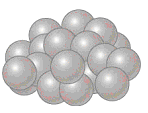
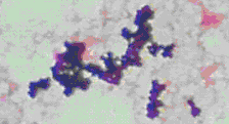
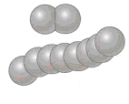
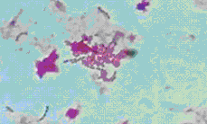
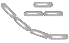
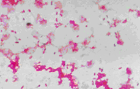
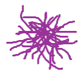
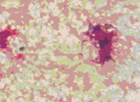
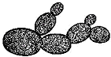
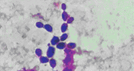

Section 7.4 Mucosal and Soft Tissue Samples - Questions
7.4a Microscopy
1. Annotate a diagram of a compound Microscope and describe the function of each part.
See diagram overleaf.
i) Light microscopy - when is this used?
⊞
Light microscopy can be used for stained or unstained specimens. Within the routine section light microscopy is principally used for examination of Gram films under oil immersion but also to examine unstained wet preparations of suspected yeast colonies at low power to confirm by morphology. In other sections light microscopy is used to examine modified ZN stained films under oil immersion to confirm Cryptosporidium positive faeces specimens, examine vaginal smears for Trichomonas vaginalis and examine faecal concentrates for parasites.
ii) Phase contrast Microscopy - when is this used?
⊞
Phase contrast microscopy is used for unstained specimens to enhance visibility and contrast of cells and structures by showing phase changes as differing brightness. A phase contrast microscope is available at the urine bench and is used for examination of urgent urine specimens out of hours when the automated system is shut down.
iii) How would you calculate the magnification of a microscope?
⊞
To calculate the magnification of a microscope multiply the power of the objective lens by the power of the eyepiece lenses (usually x10).
2a. Describe how you would perform the stains listed below and give an example of when you would use each.
List the cell types you would see and how they appear. List the bacteria/fungi you would commonly see and how they would appear (use a photograph to annotate).
i) Gram stain
⊞
- Prepare a smear and heat fix
- Flood slide with crystal violet for 30 seconds
- Flood slide with Iodine for 30 seconds
- Rinse slide with water
- Decolourise with acetone for 2-3 seconds till it runs clear
- Rinse slide with water
- Flood slide with dilute carbol fuschin for 30 seconds
- Rinse slide with water
- Blot dry and view under oil immersion
Gram staining is used to examine positive blood cultures, sterile fluids, tissue specimens, penile swabs and any suspicious colonies to aid in identification.
Below, table 7.6b (reproduced from section 7.6 Blood Culture Samples) details the common bacteria and fungi seen in blood cultures and their Gram stain appearance.
| Morphology | Genus / Group | Description | Diagram of Morphology | Microscope Image of Gram Stain |
|---|---|---|---|---|
| GPC | Staphylococci | Gram positive cocci in clusters |  |  |
| Streptococci | Gram positive cocci in pairs or chains |  |  | |
| GNB | Coliforms | Gram negative rod |  |  |
| GPB | Diphtheroids | Gram positive rod arranged in palisades | ||
| Propionibacteria | Long slender Gram positive rods tangled together |  |  | |
| Yeast | Purple stained, large ovoid cells, budding usually evident |  |  | |
ii) Differential stain
⊞
The differential stain in use within our laboratory is the DIFF -3 Rapid differential stain kit.
- Prepared slide is air dried
- Dip slide in fixative for 5 seconds
- Dip slide in chamber 2 (Eosin solution) for 4 seconds
- Dip slide in chamber 3 (Azure solution) for 5 seconds
- Rinse slide with buffer
- Allow to dry and examine under an oil immersion lens.
Differential staining is used for CSF specimens with an elevated white cell count (≥ 20/mm3) to allow the proportion of polymorphs to lymphocytes to be determined which will give an indication of the nature of the infection i.e. bacterial or viral.
The photographs of differential stains below (taken by Kirstie Burns) highlight the different cell types that can be observed.